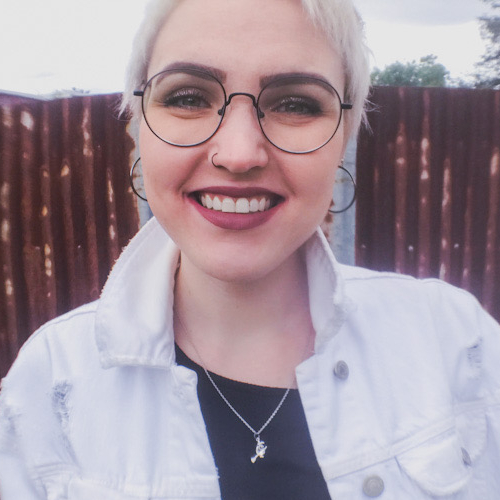

👋 I'm Ana, a software engineer based between the US and Australia.
🧑💻 Since 2021 I worked at Zendesk, where I build full stack features, API integrations and connectors, as well as wrote thorough docs and guides for what me and my team built.
🤝 Apart from the experience in technical roles, I have a background in teaching, music and humanities, as well as long history of people-to-people work. Communication and knowledge-sharing are my passions, which I apply to everything I do, including my engineering work: building software and docs with humans in mind.
🤓 I'm a big fan of extracurricular activities, such as code club and book club at work, where I have fun connecting with people outside my team and trying out new challenges.
🌴 In my free time I like to cook, paint boardgame miniatures or hang out with my cat Borsch. When the weather is nice, I like to get out of town for a hike.
🕊️ If you would like to connect, work together or just say hi, feel free to get in touch with me on LinkedIn.